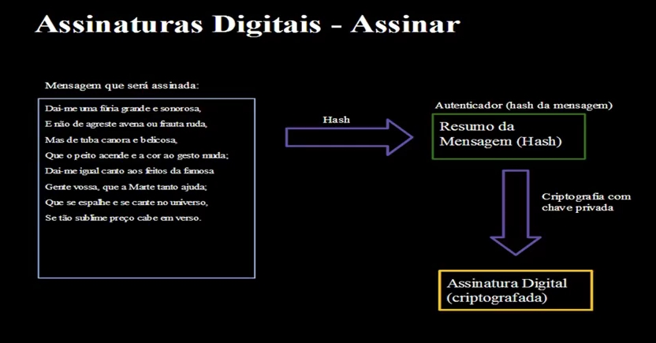
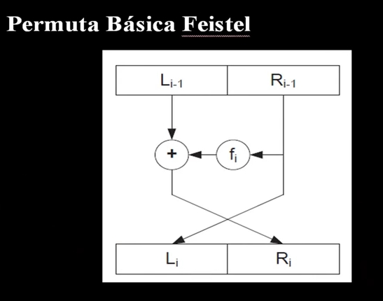
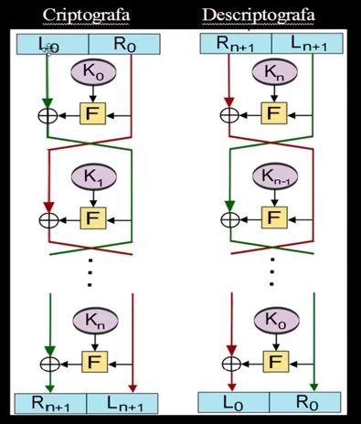

Um algoritmo de resumo de mensagem recebe uma mensagem de tamanho variável como entrada e produz um resumo de tamanho fixo como saída, totalmente incompreensível. Essa saída é chamada de Message Digest (Digest) ou Hash. E o algoritmo é chamado de One-Way Hash ou simplesmente Algoritmo de Hash.
Para que seja criptograficamente seguro, um algoritmo de hash necessita no mínimo que:
Adicionalmente, um algoritmo de hash seguro também tem:
Veja alguns algoritmos de hash comuns:
| Algoritmo de Hash | Tamanho do Resumo em Bits |
|---|---|
| MD2 | 128 |
| MD4 | 128 |
| MD5 | 128 |
| SHA | 160 |
| SHA-1 | 160 |
| SHA-256 | 256 |
| WHIRLPOOL | 512 |
O MD5 tem 128 bits e 32 caracteres hexadecimais. O SHA-1 é bastante parecido, mas tem 160 bits e 40 caracteres, o que torna mais difícil a quebra. O hash SHA-256 tem 256 bits e 64 caracteres hexadecimais, e é mais difícil ainda a quebra.
Veja os hashs da palavra "Teste" em cada um deles:
| Algoritmo | Palavra "Teste" Criptografada |
|---|---|
| MD5 | 8e6f6f815b50f474cf0dc22d4f400725 |
| SHA-1 | 6d7082969a0681db6fe658a26ff16198600f0923 |
| SHA-256 | 89f308210c7c7820bad0974f31e751bfa433d2066a93e808947c3188dedba6e3 |
Em sistemas Linux, podemos usar o programa HashID para identificar o tipo de hashs, digitando no terminal hashid 86f7e437faa5a7fce15d1ddcb9eaeaea377667b8.
Se quiser ver mais algo sobre HASH, veja nesse site: https://academy.bit2me.com/pt/que-es-hash/
Em criptografia, os hashes são usados geralmente para:
PS: MAC (Message Autenticator Code) é um tipo de código de autenticação de mensagem, geralmente adicionada ao final dela. O HMAC utiliza um hash para isso.
Há outros usos, fora da criptografia, como detecção de dados duplicados e verificação de corrupção de arquivos.
Vejamos um exemplo de aplicação de hash: Detecção de alteração de dados.
Geraremos o hash de uma imagem, alteraremos um pixel na imagem e depois geraremos outro hash para comparação.
Usaremos um programa chamado md5sum que existe no Linux, que roda no terminal. Para Windows, ele é disponibilizado no GPG4Win, bastando colocar a pasta C:\Program Files (x86)\Gpg4win\bin no path.
Para gerar o hash do arquivo, digite no prompt md5sum nomedoarquivo.jpg.
Vamos fazer isso com uma imagem, para gerar o hash dela, e mantenha o prompt aberto, edite a imagem com uma pequena alteração num editor (pode ser até o Paint), mudando apenas um pixel (aumentando a foto).
Gere o hash novamente, verificará que o hash é diferente, isso é usado para ver se o arquivo foi alterado.
Nos próprios sites de alguns arquivos (como imagens ISO de sistemas operacionais como o Linux), possuí os números de hash ao lado para isso.
O processo de autenticação fornece garantia sobre a identidade de um usuário, verificando se você é quem diz ser.
Podemos chamar de Reclamante a pessoa (ou sistema) cuja identidade será verificada.
Credenciais são a evidência que um reclamante apresenta para estabelecer sua identidade.
Assim o sistema de autenticação nos fornece proteção contra ataques como man-in-the-middle, mascaramento e spoofing, por exemplo.
Esses são alguns tipos de autenticação:
A autenticação de entidade pode ainda se subdividir em:
Esses são alguns dos paradigmas de autenticação:
Senhas são o mecanismo de autenticação mais usados para autenticar um usuário. Neste modelo, o reclamante prova sua identidade apresentando o conhecimento de uma string de caracteres. As senhas são uma das maiores vulnerabilidades de um sistema de autenticação, pois as pessoas tendem a escolher senhas fáceis de memorizar, e por isso, fáceis de adivinhar. O PIN também é um tipo de senha, que contém apenas números em uma pequena quantidade, geralmente de 4 a 6 algarismos.
Muitas senhas são muito comuns, fáceis de serem quebradas por invasores, como podem ver nesse link: https://tecnoblog.net/noticias/2019/12/19/25-piores-senhas-2019-lista-inclui-123456-qwerty-password/
Se quiser testar a força de uma senha, temos esses dois sites pra isso:
Esses são alguns dos tipos de ataques a senhas:
Um reclamante pode fornecer evidência de sua identidade ao demonstrar a posse de um token.
Um token é um objeto físico, como uma chave, um documento de identidadem um dispositivo eletrônico ou um smart card, por exemplo.
Geralmente os tokens são usados em conjunto com uma senha para fornecer um grau mais elevado de certeza com relação à identidade de um reclamante.
Geradores de números eletrônicos ou um cartão com chip são exemplos disso.
Um smart card é um token do tamanho de um cartão de crédito que contém um microprocessador, memória para armazenar programas e dados, e contato elétricos usados como interface com um leitor de cartões, o qual também fornece energia elétrica ao dispositivo.
Geralmente o smart card possuí um valor secreto armazenado, como uma chave privada de assinatura digital ou um número secreto, usado para realizar autenticação do portador do cartão.
Smart cards podem também ser os que se "encostam" num painel, como os cartões de ônibus, e qualquer um que tenha chip, inclusive os chips de celulares são um tipo de smart card.
Temos também tokens desconectados, que é um tipo de token que não possui conexão física nem lógica com o computador cliente.
Possuem um display que mostra um código de autenticação que muda, por exemplo, a cada minuto ou outro período.
O código pode ser usado então, para realizar autenticação em um sistema, geralmente online, como um bankline.
A biometria fornece garantia da identidade de um reclamante baseado em características humanas físicas, comportamentais e morfológicas mensuráveis.
A biometria é usada geralmente em combinação de outros paradgmas de autenticação para obertmos um nível mais alto de segurança.
Esses são uns exemplos de biometria:
Um esquema de assinatura digital é um esquema matemático utilizado para provar a autenticidade de uma mensagem ou documento digital. Podemos usar assinaturas digitais com qualquer tipo de documento, mesmo criptografados, assim o destinatário da mensagem pode ter a certeza da identidade do remetente e também confiar que a mensagem chegou ao destino intacta.
Uma assinatura digital precisa ter algumas características, como:
Usa-se então uma assinatura digital quando você envia uma mensagem a alguém e, embora possa não ser importante que a mensagem seja mantida em segredo, é muito importante que o destinatário da mensagem tenha certeza de que essa mensagem realmente partiu de você.
Nesse caso, você pode criptografar a mensagem com sua chave privada, envá-la, e o destinatário só será capaz de decriptá-la com a sua chave pública (não a dele nem de mais ninguém), provando a autenticidade da mensagem. Sendo assim, uma assinatura digital utiliza alguma forma de criptografia assimétrica para operar.
Porém, uma forma mais eficiente de obter esse mesmo resultado é criptografar um pequeno bloco de bits que seja uma função do documento, e não o documento inteiro. Este bloco é chamado de autenticador (autenticator) possui a propriedade de que é impossível alterar um bit que seja no documento sem desfigurar totalmente o autenticados. Criptografamos então o autenticador com a chave privada do remetente , e ele servirá para verificar a autenticidade do documento todo. Podemos usar um hash como o SHA-1 para essa função.
Veja o esquema das assinaturas abaixo:
Dessa forma, a assinatura digital é enviada anexada à própria mensagem e o conjunto é enviado ao destinatário. O destinatário então calcula o hash da mensagem, decripta a assinatura digital, e compara os dois valores, se forem idênticos, a mensagem é autêntica.
Mas há um problema com esse esquema de assinatura digitais: Como podemos ter certeza de que um documento assinado foi realmente assinado pelo remetente correto? Em outras palavras, como podemos garantir que um intruso não consiga gerar e assinar um documento em nome de outra pessoa? Para resolver esse problema devemos utilizar um certificado digital, que pode ser usado para atestar e verificar a validade de uma assinatura digital.
Alguns dos algoritmos mais comuns usados para assinar digitalmente um documento são RSA, DSA, ElGamal e HMAC.
O MD5 (Message Digest 5) é uma função de hash criptográfico muito usada. Produz um valor de hash de 32 caracteres hexadecimais (128 bits).
Um hash MD5 pode ser usado em aplicações como:
PS: No mundo real as duas aplicações não são recomendadas com o MD5.
Uma minúscula mudança no texto original produz uma mudança brutal no resultado computado pelo hash, por exemplo:
320652e3afe3d17415897504813abf7b93a6ff559b4a143ff1b6f77c57145951A segurança do hash MD5 está fortemente comprometida. Ele é vulnerável a ataques de colisão, mesmo usando máquinas comuns com poder de processamento médio.
Um ataque de colisão em um hash criptográfico é um tipo de ataque onde se tenta encontrar duas entradas que produzam o mesmo valor de hash na saída. Outro problema grave, relativo ao uso de hashes MD5 para armazenar senhas, é o uso de rainbow tables para reverter um hash e descobrir a string que o originou. Também não é recomendado usar isso com SHA-1.
No Linux, o gerador de hash já existe (md5sum, sha1sum e sha256sum), já no Windows, precisaremos usar os programas do GPG4Win.
Para gerar o hash de um arquivo qualquer, usamos o comando md5sum NomedoArquivo.extensao. Se quisermos gerar um arquivo com o hash MD5 dele, podemos usar md5sum NomedoArquivo.extensao>"NomedoArquivo.md5". No Linux, usamos a mesma lógica com hashs sha1 e sha256, mudando o comando para sha1sum e sha256sum, respectivamente.
O gerador de hashs do GPG4Win também tem opção para SHA-1 e SHA-256.
PS: Independente do arquivo o hash sempre terá um tamanho pequeno.
Pra quem usa Windows, o 7-Zip, programa de compactação e descompactação, também oferece um utilitário para verificar hashs SHA-1 e SHA-256, basta clicar com o botão direito no arquivo e verificar.
Existem algumas técnicas de ataques à hashes, sendo as mais comuns as seguintes:
Os dois primeiros métodos não são muito efetivos, devido à imensa quantidade de valores que precisam ser testados, principalmente com senhas longas.
Os ataques de força bruta consistem no uso de um programa que tenta várias combinações aleatórias até achar a senha certa. O dicionário age de forma parecida, mas usando um dicionário de palavras num arquivo txt comum, que pode ser feito especialmente para um determinado usuário (um com palavras da Bíblia para obter senha de alguém religioso ou um com nomes de bebês para obter a senha de uma grávida, por exemplo).
O ataque de colisão é quando encontramos dois textos planos diferentes que tem o mesmo hash, inclusive já chega a comprometer os algoritmos MD5 e SHA-1. Já o ataque de aniversário baseia nas probabilidades matemáticas de encontrar determinada senha.
Uma Rainbow Table é uam espécie de table que contém milhões (ou bilhões) de hashes pré-calculados e as strings ("senhas") que os originaram. Uma rainbow table é otimizada para armazenar hashes e senhas, permitindo pesquisar entradas de forma muito veloz. São usadas basicamente para quebrar hashes de senhas.
Uma função de hash mapeia textos planos (dados não criptografados) em hashes de forma que não podemos discernir qual texto plano originou qual hash. Para que seja possível descobrir o texto plano a partir de um hash, devemos aplicar a função de hash em cada texto plano possível até encontrarmos o hash idêntico ao procurado. Podemos também armazenar cada hash gerado em uma tabela, de modo que podemos consultá-la mais tarde semprecisarmos efetuar o cálculo de hash outra vez.
Uma forma comum de proteger o hash de nossas senhas contra ataques de rainbow tables é o uso de uma técnica conhecida como salt ("salgar a senha"). Um salt é uma informação aleatória adiciona à entrada da função de hash, tornando a saída da função única, e imune às rainbow tables. Seria algo tipo FuncaoHash(TextoPlano + Salt). O "salt" pode ser o nome de usuário, um PIN, um valor aleatório, etc.
Para vermos na prática um funcionamento de um Rainbow Table, podemos utilizar sites para isso:
No primeiro site, coloque uma senha simples como "laranja" (cujo hash é cf75ceb29197f57b19dcb8b4757368e8), e pegue o hash dela e jogue no segundo site, pra ver se ele encontra algo. Da mesma forma, teste senhas de todo tipo, das mais fáceis até as mais complexas.
Isso é útil para sabermos se uma senha é fraca ou mais forte.
Além do MD5, o Rainbow Table também pode quebrar outros tipos de senhas, como SHA-1.
A maioria dos algoritmos de criptografia simétrica de bloco possuem uma estrutura descrita por Horst Feistel, da IBM, m 1973. As entradas do algoritmo são blocos de texto plano de comprimento 2x bits e um chave K. O bloco de texto plano é dividido em duas metades, L0 e R0. Essas duas metades passam por n rodades de processamento e então se combinam para produzir o bloco de texto cifrado.
Cada rodada r recebe como entrada Lr-1 e Rr-1, derivadas da rodada anterior, assim como uma subchave Kr, derivada da chave geral K. Essas subchaves são diferentes de K entre si pois são geradas a partir de K com um algoritmo de geração de chaves. As interações possuem todas a mesma estrutura. Uma substituição é realizada na metade esquerda dos dados, por meio da aplicação de uma função F na metade direita dos dados com a chave e então obtendo-se o XOR da saíde desta função e da metade esquerda dos dados.
Veja abaixo a representação da permuta básica Feistel:
Em outras palavras, o texto plano é dividido em dois, o que está no lado direito (o -1 é o bloco anterior de ambos) na função f que é aplicada a criptografia com uma chave, a saída recebe o que está do lado esquerdo e a saída vai pro lado direito, e o que estava no lado direito vai pro esquerdo. Isso é feito várias vezes, formando uma rede Feistel.
Veja abaixo um exemplo de rede Feistel dessa forma:
Muito algoritmos de criptografia utilizam uma ideia baseada em redes Feistel.
Como a cifra de Feistel será aplicada depende da escolha de alguns parâmetros, como:
O processo de descriptografia de uma cifra de Feistel é igual a criptografia. Usa-se, nesse caso, o texto cifrado como entrada do algoritmo, e as suchaves Kn em ordem reversa.
As cifras de Feistel são usadas nos algoritmos de criptografia DES, Blowfish, RC5, Twofish, 3DES, entre outros.